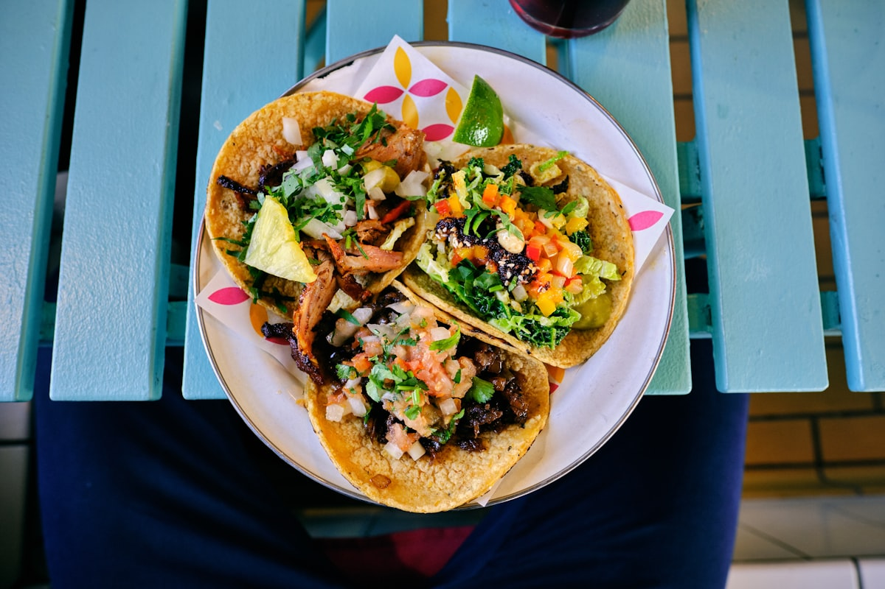

Address & Deli
El Taco Deli
7012 Albemarle Road
Charlotte, NC 28227
Near Farm Pond Lane intersection
We are conveniently located at 7012 Albemarle Road in East Charlotte, open seven days a week from 9:00 AM for all-day Mexican breakfast, freshly seared street tacos, and quick takeout orders.

Everything you need for dining in or picking up your takeout order.
El Taco Deli
7012 Albemarle Road
Charlotte, NC 28227
Near Farm Pond Lane intersection
Mon, Wed – Sat: 9:00 AM – 8:30 PM
Tuesday: 9:00 AM – 7:00 PM
Sunday: 9:00 AM – 7:30 PM
Serving all-day breakfast platters and street tacos from open to close.
Primary: (980) 298-8799
Secondary: (704) 853-4576
Call ahead for fast 10–15 minute pickup turnaround on tacos, quesabirrias, and breakfast platters.